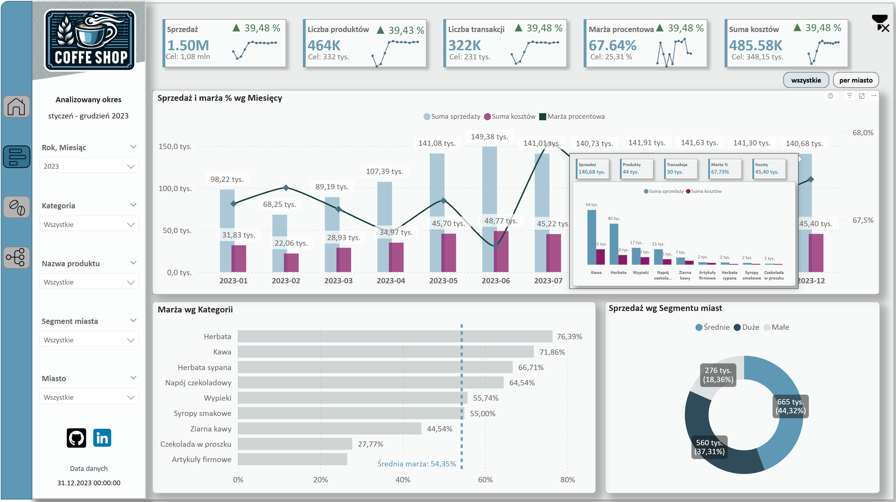
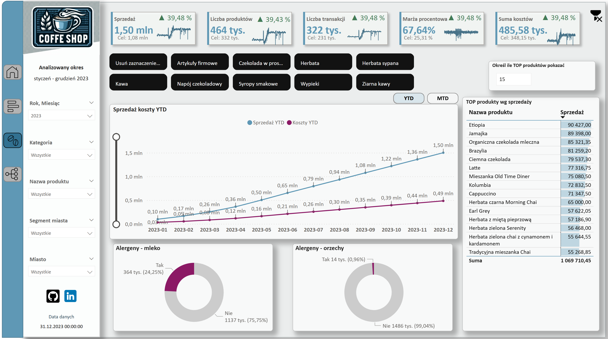
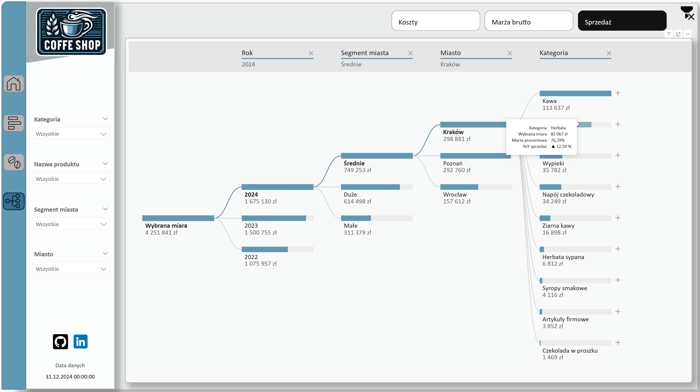

Project description
The project was to build an analytical report in Microsoft Power BI. The main goal of the final product is to let users analyse product sales in the context of different factors. The report was built to support decision-making by providing key information on sales results, profitability, the number of transactions and seasonality. The whole process covered data preparation, building the analytical model and creating the final visualisations, which allow interactive analysis of the data from different angles.
The Power BI file (PBIX) and documentation describing the structure and data model, with a list of DAX measures, are available in the GitHub repository.
Technologies used
- Power Query – importing, transforming and preparing data for visualisation.
- DAX – calculating indicators and measures and creating tables.
- Power BI – visualising data and building interactive dashboards.
Report structure
The report has four pages:
- Title page – an introductory page with an introduction to the report.
- Sales – the main KPIs and the trend of sales and costs in the period selected by the user, set against margin %.
- Products – detailed data on sales and costs of individual products, including by category, top-selling products, cumulative sales (MTD and YTD) and the share of sales of products containing allergens.
- Decomposition tree – a dynamic visual for analysing a selected measure (margin, costs or sales) under the filters applied by the user.

From overview to detail
One of the principles I followed when designing the layout was to present data from the general to the detailed. I did this with three analytical pages, each enabling a more detailed analysis. The Sales page (Fig. 1) gives a general view of sales, costs and margin. The Products page (Fig. 2) lets you go deeper into the indicators that interest the user. The decomposition tree (Fig. 3), on the last page, is a dynamic, interactive visual for analysing data in many dimensions. It aggregates data automatically and lets you drill down in any order. It is a powerful tool that can greatly help in understanding complex datasets and in making business decisions.


Why build reports in Power BI
- Clarity and efficiency – advanced analytical features and interactive reports help present data clearly and efficiently, which makes business decisions easier.
- Integration with many data sources – Power BI connects data from databases, Excel files, cloud services and business applications, so reports can be comprehensive and consistent.
- Interactivity – users can interact with the data by filtering, sorting and exploring different views, which allows deeper analysis and better understanding.
- Easy comparison of data – dynamic charts make it quick to compare values across categories and to analyse trends.
- Choice of refresh frequency – depending on business needs, the user can set how often data is refreshed, so the analysis matches specific requirements and stays up to date.
Data source
The project was created as part of the course 5-day Power BI challenge with AI elements and then extended (the data covers a longer period and contains more than the course's source data).